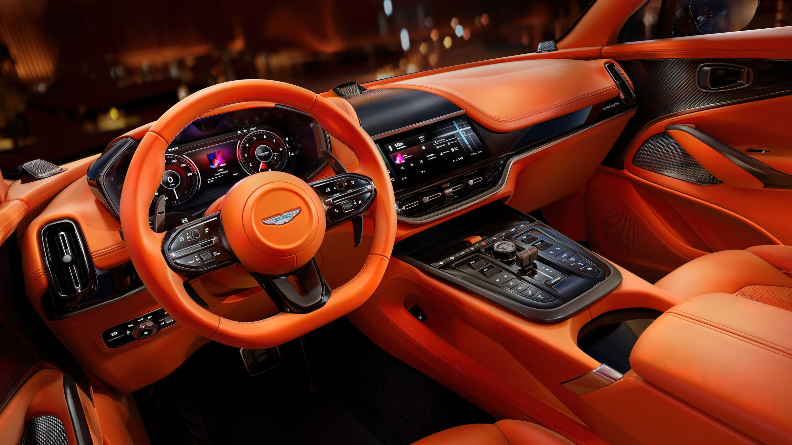
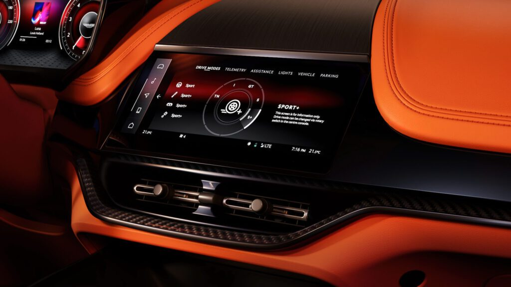
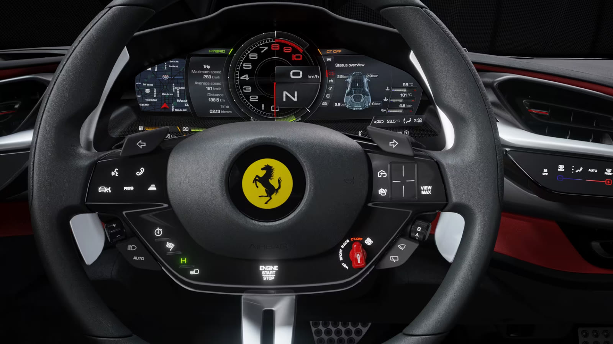
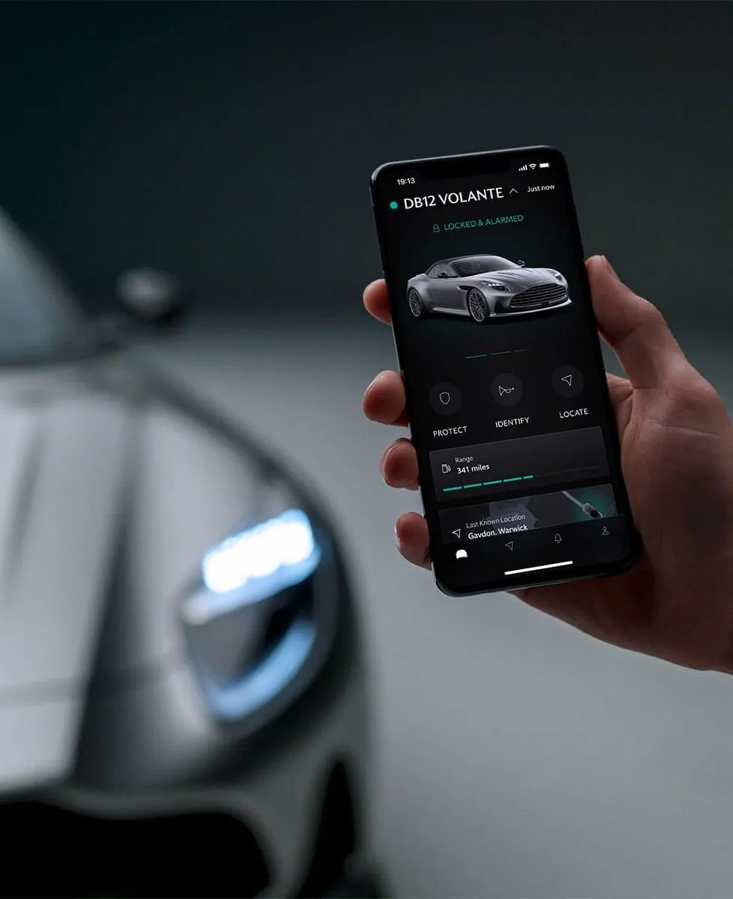
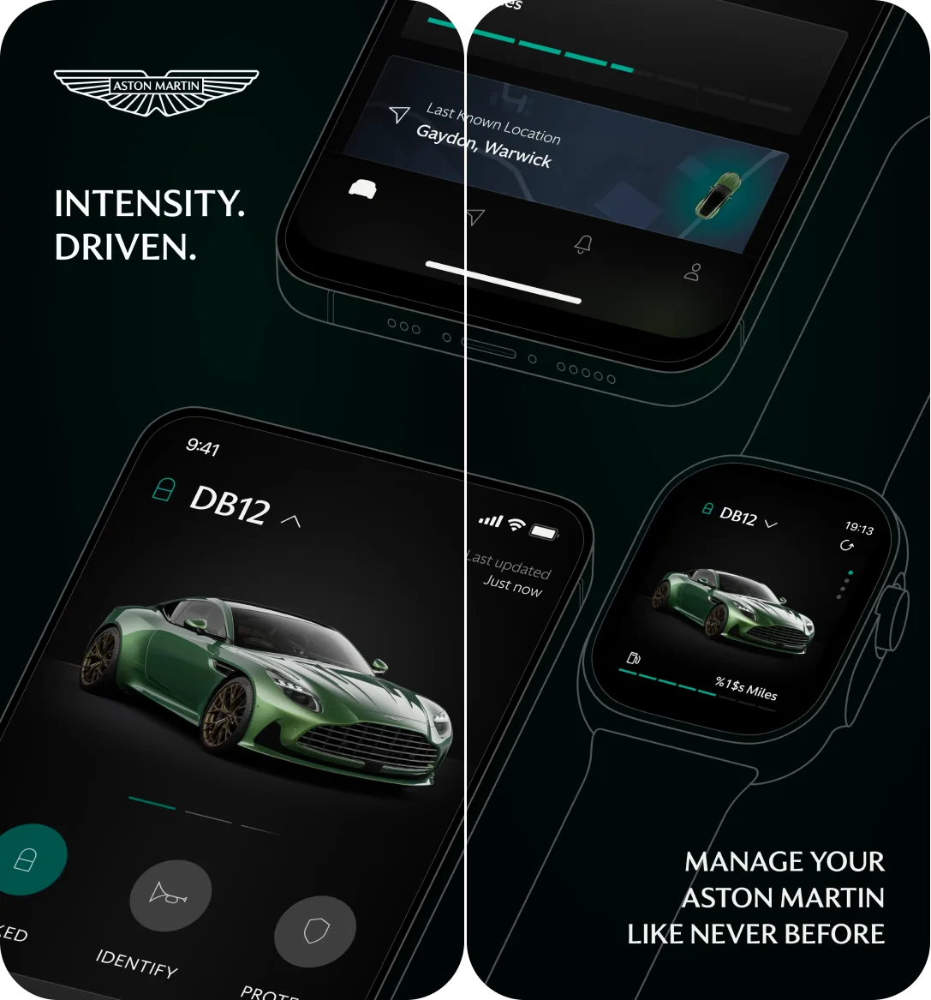
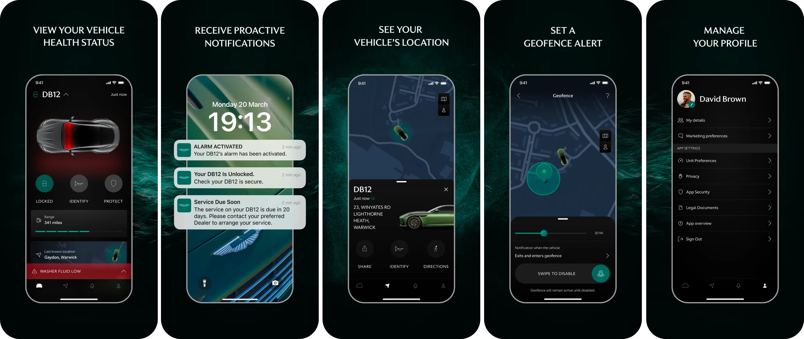
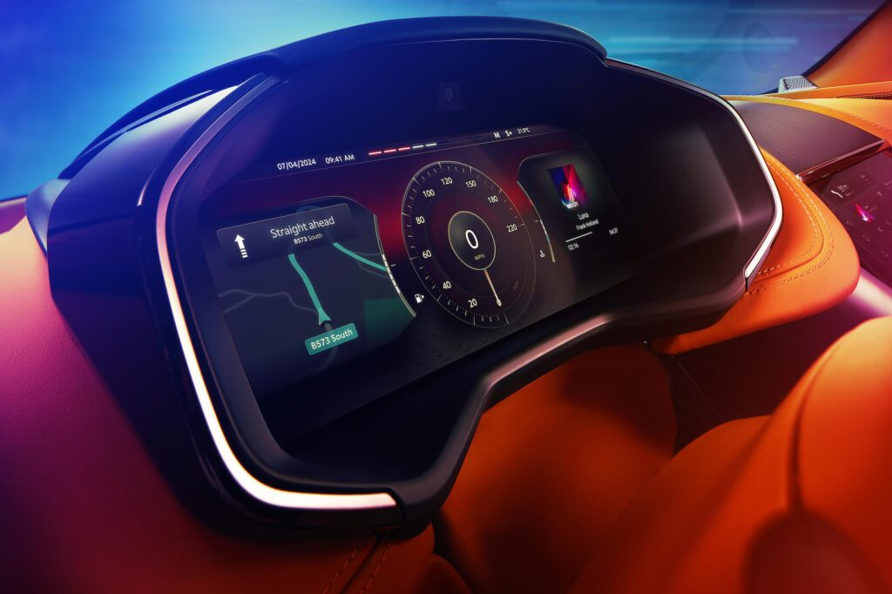
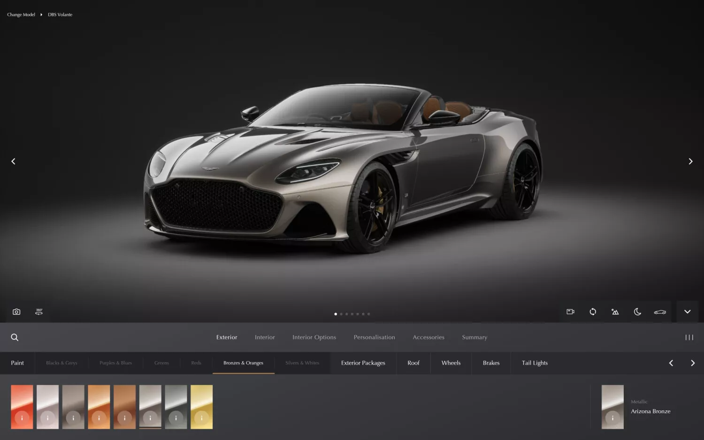
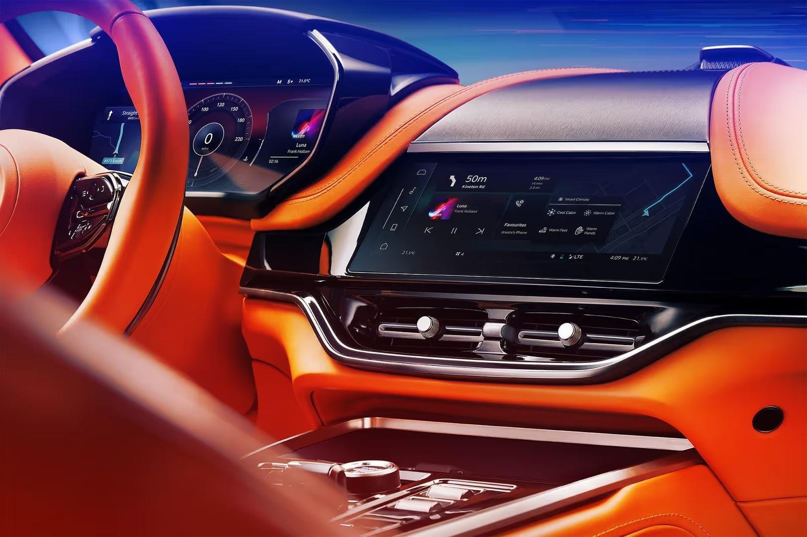

Aston Martin
A new, bespoke Aston Martin HMI. Connectivity, delivered in 18 months.
- Role
- Project (Lead) UX/UI Designer, R&D
- Timeline
- 2021 to July 2023
- Team
- 2 senior designers, 2 senior researchers, 1 motion graphics specialist
- Scope
- Interior HMI and switchgear, connected car app and wearables, over-the-air updates, website and configurator (E2E customer journey)
The challenge
Aston Martin was replacing its Mercedes-sourced infotainment with a system of its own, designed from scratch across a full model-line refresh: DB12, then the new Vantage, DBX707 and Valhalla.
A bespoke HMI has no rulebook. An app inherits its interaction model from iOS and Android OS guidelines; a car interface doesn't, so we had to define core interaction principles and how it would behave before designing a single feature. The steering wheel controls and much of the switchgear came from Mercedes, and the HMI itself was still underpinned by Mercedes technology, so we were still somewhat technically constrained. The biggest challenge, however, was that we were running two development programmes at once: agile sprints for the app following digital best practice, and a vehicle programme timeline for everything in the car, because it was intertwined with the core product development process.

My role and the team
I led the UX/UI and research team within R&D. Delivery partners included an Italian HMI supplier, two London digital agencies for the apps and wearables, and a Stuttgart telematics partner for the in-car connectivity unit and back end.
The Connect Innovation Forum
I co-ran a monthly Connect Innovation Forum with the product owner, sponsored by the director. It brought together sales and marketing directors, the head of digital and the website team, product directors and engineering stakeholders. Anyone who had a role to play in the project would attend, and it was our key forum for regular alignment throughout the project.
We scored every feature using Weighted Shortest Job First: the value to customers and the business against the time and cost to design and build. High-value, low-effort features went to the front; low-value, high-effort ones dropped down. The result was a prioritised backlog the whole business had agreed, which fed straight into our design and delivery sprint cadence.
How we worked
Research, design and development ran as staggered sprints. Each week we pulled features from the roadmap, researched them through moderated and unmoderated testing, iterated on the feedback, finalised the designs, walked developers through them and handed over assets from the design system in Figma. Once built, features went back through testing for further validation and refinement, technically as well as from a UX perspective. Major milestones went to the C-suite and CEO for sign-off before moving into production.
Design Process
Interaction Model & Information Architecture
Before any feature work, we defined the interaction model and the information architecture, so every function had a clear home.
Switchgear
We digitally mapped where every control would live, working within the supplier's constraints and the flexibility the hardware team could give us. We expected to inherit Mercedes' logic for the steering wheel, but had more freedom than anticipated, for example in how cruise control activates and where to place the resume and cancel buttons.

Benchmarking in the real world
We had cars delivered to the factory and spent days living with them: the Lucid Air, Tesla Model S Plaid, Ferrari SF90, the latest Mercedes and several McLarens. The Ferrari was a turning point. Its haptic steering wheel controls looked spectacular but were hard to use while driving, which reinforced our decision to keep key controls physical. Ferrari has since publicly reversed course and brought physical buttons back.

Eye tracking perception & completion tests
With the interior design team, we built a physical buck of the car to recreate real driving. Participants completed tasks like changing the navigation or the music while we tracked their eyes: where they looked, and how long each glance away from the road took. The findings shaped the interface and the hardware together, from screen tilt and ergonomics to how visible the cluster was through the steering wheel.
The connected car app
The DB12 was the first connected Aston Martin, so the app was the first time an owner could reach their car from their phone or their wrist. It had to feel like part of the car, not an add-on.
Agile, next to a vehicle programme
Unlike the HMI, which was a fixed scope briefed to the supplier, the app ran in agile sprints. Two London digital agencies built the phone and wearable apps, and a Stuttgart telematics partner delivered the connectivity unit in the car and the back end behind it. My team owned the experience across all three: features came out of the Connect Innovation Forum's prioritised backlog, we designed and tested them, then walked each partner through the designs and handed over assets from the design system.
Benchmark first, then validate
Remote lock and unlock, vehicle health, location and geofence alerts are expected in any premium connected car app, so we didn't start from a blank page. We benchmarked the market with Screens and SBD Automotive, alongside the competitor cars we were living with at the factory, then pointed our research at validating that our designs worked for Aston Martin owners rather than rediscovering the features.
Researching with real owners
We ran in-person focus groups with customers at selected US dealers, alongside online moderated and unmoderated studies. Every round came back with a confidence score and metrics, so the team and the business could see how strongly a design had tested before it moved on, and what needed another iteration.



Designing for the time a car takes to respond
One finding went beyond the interface. In testing, we simulated the real time a car takes to respond to a remote command: 10 to 20 seconds to unlock. Participants found it far too slow. That gave us the evidence to push engineering on vehicle response time, a reminder that UX is the whole experience, not just the screen.
One car, everywhere it appears
The app, the wearable and the in-car HMI were built from Aston Martin's first digital design system, and used the same 3D models, paint and trim as the configurator. The car an owner specced online is the car they see in the app, on their wrist and on the screen inside it.

One profile, end to end
With the digital, sales and marketing teams, I worked on the website and the new multi award-winning configurator, including 1st place in the Marketing category at Best of Consulting 2022. More than half of customers use the configurator during their purchase journey, and dealers use it on the 35ft screen at Q New York, the brand's Park Avenue flagship.
The website and configurator capture customers up front, creating their Salesforce CRM profile and Aston Martin account from the first touchpoint. Once a customer specced and ordered, and the dealer activated their account, their order details and build slot were already waiting in the app. The same account then carried through to the car's connected HMI on delivery: one ownership experience rather than separate logins across siloed systems.

Design system
I conceptualised, built and maintained Aston Martin's first digital design system, derived from a new brand refresh, keeping the in-car interfaces consistent with the mobile, desktop and wearable experiences.

Outcome
The DB12 launched as the first connected Aston Martin, running the first infotainment system Aston Martin had designed in-house. The same system went on to the Vantage and DBX707.
Reviewers singled out the new infotainment as a major step up from the previous Mercedes system, and praised the balance between touchscreen and physical controls.
- 3 modelsDB12, Vantage and DBX707 run the system
- 1 accountFrom the first configurator visit to the car on delivery
- 1st placeMarketing category, Best of Consulting 2022, for the configurator
- Over halfOf customers use the configurator in their purchase journey